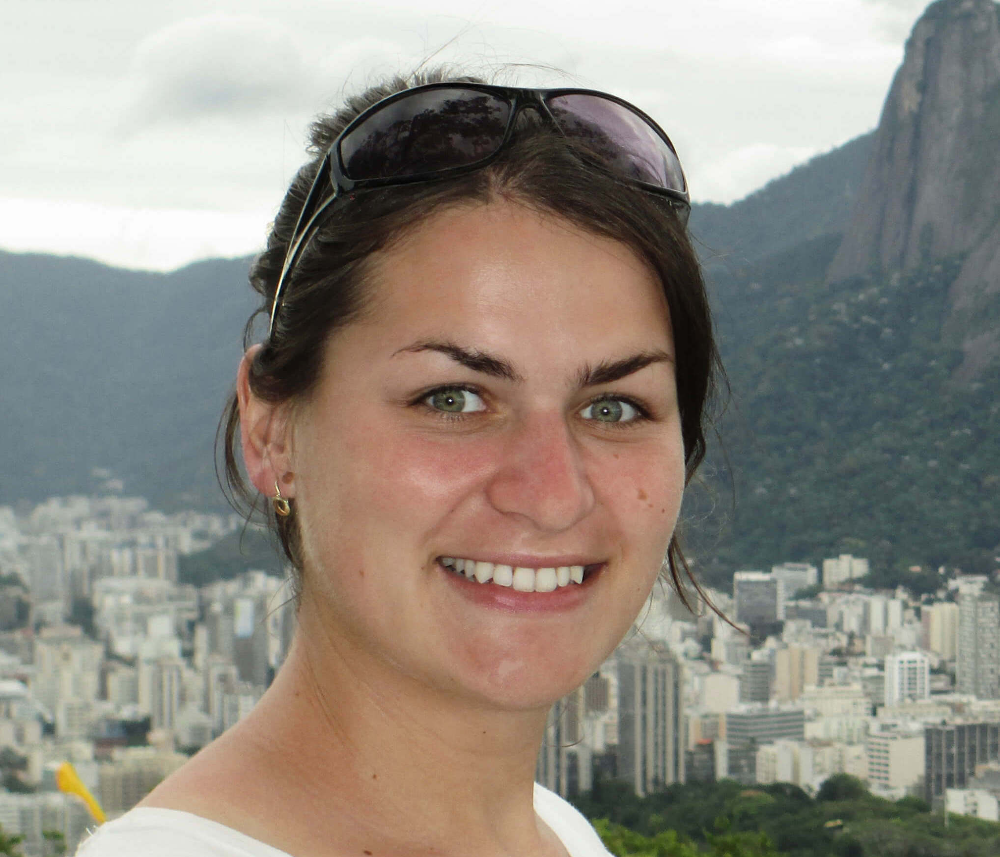

Katarina Dlugosova was born on the 30th of December 1989 in Stara Lubovna, a small town in the north-east of Slovakia. While at school, she earned countless awards and won countless competitions. A few worth noting are third place at the International Geography Olympiad in 2008 in Tunisia, and participating in the International Biology Olympiad in 2009 in Japan. She played five music instruments: guitar, piano, violin, flute, and cross flute.
After high school, she applied for one of the top and oldest medical schools in Central Europe — Charles University in Prague. From ~1500 applicants, ~250 students were admitted, she was the #1 applicant after passing written exams, and third after oral exams. While studying, Katarina did a semester abroad in Vienna, interned at King’s College London, and completed two semesters of acupuncture studies.
After 6 years of hard work at school and in search of a better life, she passed the German OSD language certification and got a job at a hospital in Deggendorf, Germany.
Katarina loved skiing, mountaineering, horse riding, ballroom dancing, and mountain biking. She traveled to North & South America, Australia, Europe, and Asia. One thing I will always admire about her — she never wasted a second of her life. It’s like she knew how valuable it was without knowing that she had little time. Anytime she had a day off, she was out in nature, exploring. She had an enormous drive and was a big inspiration for me.
In December 2017, she moved to Switzerland to work as a doctor there. On the 19th of August 2018, at the age of 28, she suddenly died in the mountains of Switzerland.
— Her brother, Marek